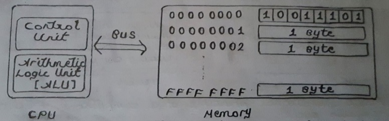
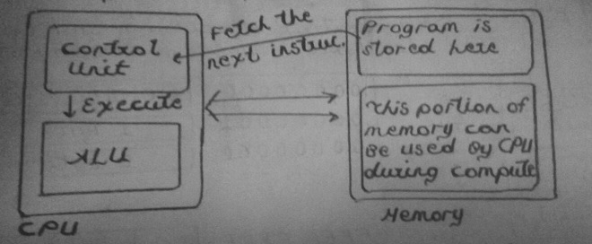

Programming Digital Computers
Table of Contents
1 Getting to Know the Computer
Here, we give the first introduction to how a modern computer works. Throughout, we will mostly talk about Intel 64 because this is the most prevalent architecture around. We assume some familiarity with C programming.
1.1 Introduction
What do we mean by programming? You might say it is about coding up algorithms to solve problems. Then, what is an algorithm? Informally, an algorithm is a series of commands, a recipe that explains how to do something. At this point, let's give an example algorithm so that everything is concrete. This algorithm is due to Euclid, great mathematician of Ancient Greek. It describes a process to find greatest common divisor, GCD from now on, of two natural numbers. First, let's talk a little bit about GCDs.
Suppose we have two numbers, \(a\) and \(b\). We know \(GCD\) of any number and \(0\) is that number because everything divides \(0\). So if \(a\) or \(b\) is \(0\), we know the answer. We also know if \(a = b\), \(GCD(a, b) = GCD(a,a) = a\). If they are not equal, one is bigger than the other. Say \(a\) is bigger. Write \(a\) in quotient-remainder form. \[a = b.q + r\] Here is the key idea. Remainder \(r\) is smaller than \(b\) and \[GCD(a,b) = GCD(b,r)\]
Let's reason more about this. Say \(GCD\) of \(a\) and \(b\) is \(k\). Then \(k\) also divides \(b.q\). So I can write \(a\) as \(k.d1\) for some number \(d1\) and I can write \(b.q\) as \(k.d2\) for some number \(d2\). Observe that \[a - b.q = k(d1 - d2) = r\] and \(k\) divides \(r\) as well. This is the reason we can say \[GCD(a,b) = GCD(b,r)\] Now we'll describe the algorithm.
1. If a = b, answer is a. Stop! 2. If not, check if a < b. If so swap a and b. |Notice that at this step, we have a > b| 3. If b = 0, answer is a. Stop! 4. If not, Find the remainder of a/b, call this r. 5. Update a to be b and b to be r. 6. Go back to 1.
Here is an example run of the algortihm where we find \(GCD(60, 18)\).
1.1 60 is not equal to 18, go to next step. 1.2 We check if 60 < 18. No it is not. So we skip the sawp and go to 3. 1.3 b is not 0 so we don't stop. We move to 4. 1.4 Remainder is 6. 1.5 a is now 18 and b is now 6. 1.6 Go back to 1. 2.1 18 is not equal to 6, go to next step. 2.2 We check if 60 < 18. No it is not. So we skip the swap and go to 3. 2.3 b is not 0 so we don't stop. We move to 4. 2.4 Remainder is 0. 2.5 a is now 6 and b is now 0. 2.6 Go back to 1. 3.1 6 is not equal to 0, go to next step. 3.2 We check if 6 < 0. No it is not. So we skip the swap and go to 3. 3.3 b is 0. The answer is 6. We stop! GCD(60, 18) = 6.
In reality, you might not implement the algorithm as described here. I tried to made every step explicit so that we can understand the process.
Notice how we are decreasing the compared numbers at each step so that this process bound to reach the end case where one of \(a\) or \(b\) is \(0\). This is what we mean by an algorithm is finite, it stops with the correct result after some steps. So, they are like cooking recipes!
In fact, programming and cooking are rather similar. First, just like recipes, we want our algorithms to be finite, as we said. Who would like to cook endlessly without eating any of that juicy meal, right? An infinite chain of commands would not accumulate into a meaningful result.
Computer programs and algorithms are different things. For practical reasons, we might want to think some of our programs as running indefinitely. This might be a web server waiting for requests in an infinite loop, as an example.
Secondly, and maybe more importantly, the notion of model of computation is implicit in our understanding of algorithms. This gives us an agreed upon set of basic instructions to describe our algorithms. I relied on, for example, your knowledge of basic operations like addition, remainder etc. to describe Euclid's Algorithm above. Cooks do not describe recipes by telling us which muscles to move. They talk about things like cut the onion, put it into sugar marmalade etc. They have their own language and operations.
A model of computation is a theoretical model, an abstract computer that gives us basic operations and their costs in terms of time and memory. There are many different models like Turing machines, Lambda Calculus, Stack computers and many more for different needs of theoretical computer scientists. You can study them. In these notes, we will talk about real computers but I should point out that the theoretical machine most similar to our real digital computers is RAM model. Before going further, it is a good idea to skim the Wikipedia page of Random Access Machines so that you can get confused a little more.
Real computers we are going to talk about are huge systems. We said we will talk about Intel64 but we should start small. Let's start with first computers. In the beginning, computers were consisting of a CPU and a memory. They were communicating through a channel, a bus. See below figure.

Figure 1: A basic computer organization
ALU part was carrying out the basic instructions like addition, less than comparison etc. Conrol Unit was coordinating the CPU and memory. Of course, some of the basic intsructions were related to control. For example, in our algorithm, we had instructions like "go back to 1". These kind of tasks also requires some basic instructions. Together, all those basic instructions that can be performed by a CPU depicted its instruction-set. Memory is just an array of bytes that we can index into random positions all we want.
Now comes the curicial idea that made whole this thing to be known what we call today as von Neumann architecture, after great mathematician John von Neumann. This is the idea of stored program computer. I will explain it briefly. We saw that we represented data as binary numbers stored in our memory. Can we also represent basic instructions as binary numbers? Sure we can. Take the very crude example below.
1001 101110 010001 add 46 33
Imagine we have a computer that can perform 16 different basic instructions. It can perform these on 6 bit numbers. Above 16 bits might represent addition of 46 and 33. 1001 is called the opcode of the addition operation. Programs are ordered set of instructions, executed one after the other. With this binary representation program and data both became just numbers. Yes, everything is a number. von Neumann suggested that since we can represent instructions as numbers as well, we can just put our programs into memory, just like our data. CPU can fetch an instruction, decode it and execute it.

Figure 2: Stored Program Computer
Notice immediately how we are faced with problem of overflows, sum of 46 and 33 is not a 6 bit number. How are you going to handle this situation? We will see the method chosen by Intel but there are hundreads of design decisions that go into crafting of a CPU. This is the field known as computer architecture and it is a different engineering discipline. You can be one but, as I said, it is different than programming. A programmer does not need to know as much about computers as a computer architecture. Nevertheless, she needs to know the fundamentals to use these devices effectively.
In a stored program computer, the basic operational principle of a computer is known as Fetch-Decode-Execute Cycle
- Fetch the current instruction to be executed
- Decode the operation and required operands
- Execute the operation
- Go back to 1
1.2 A First Look at the Computer Through Intel64 Assembly
Talkk about basics of assembly programming.